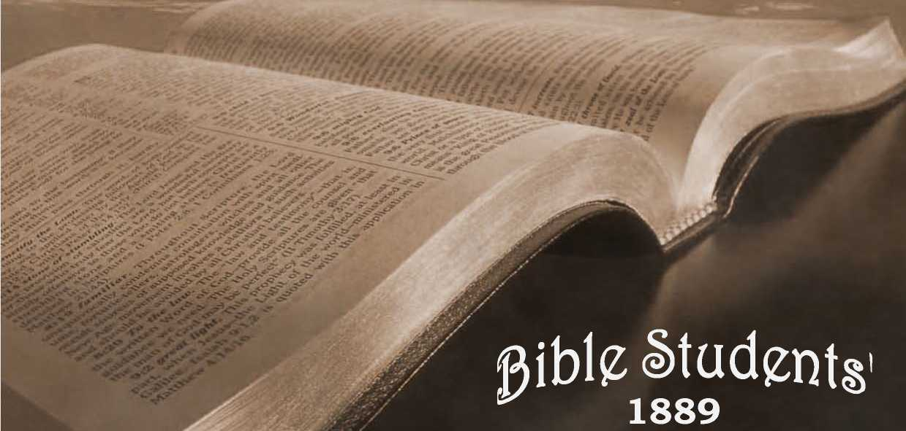

No. 2—The Scripture Teaching on Calamities, and Why God Permits Them
■ The Old Theology. I
THE SCRIPTURE TEACHING
ON
AND
Why God Permits Them.
“ Inquire for the old paths.” Jer. 6: 16.
1889;
TRACTS.
Entered as Second Class Mail Matter, at the Post-office, Allegheny, Pa.
FOR .
No. 2—1889.
PUBLISHED BY THE TOWER TRACT SOCIETY, ALLEGHENY, PA.
Quarterly, 6 cts. a year, 2 cts. per copy.
|
10 copies quarterly, |
1 Vf- |
( 40 tracts), |
50 cents. |
|
25 <. .. |
1 |
( too “ )> |
$1.00 |
|
50 “ “ |
1 • |
( 200 “ ), |
i-75 |
|
xoo “ « |
X •• |
( 400 " )> |
3-oo |
|
500 “ “ |
X |
( 2000 “ ), |
I3-5O |
|
IOOO •* “ |
I |
( 4000 “ ), |
25.00 |
|
3000 “ “ |
I •• |
(12000 “ ), |
68.00 |
We specially commend, both to honest skeptics and to saints, “ The Plan of the Ages.” No book of its size, known to us, so fully unfolds the divine plan revealed in the Scriptures. It is a veritable “ Bible Key,” and is well described as “ A helping hand for Bible students.” We can supply it by mail, cloth bound, for $1, or in paper covers for 25 cents, or will loan it to the poor, who will promise a careful reading and to pay return postage.
(2)
— THESE TRACTS ARK NOT COWRIGHTED. — — ANYONE MAY REPUBLISH. —
CALAMITIES—WHY PERMITTED.
“EXCEPT YE REPENT, YE SHALL ALL LIKEWISE PERISH.”
“ There were present at that season some who told him of the Galileeans, whose blood Pilate had mingled with their sacrifices. And Jesus answering said unto them, Suppose ye that these Galileans were sinners above all the Galileans, because they suffered such things ? I tell you, Nay: but, except ye repent, ye shall all likewise perish.
" Or, those eighteen, upon whom the tower of Siloam fell, and slew them, think ye that they were sinners above all men that dwelt in Jerusalem ? I tell you, Nay: but, except ye repent, ye shall all likewise perish.”—Luke 13 : I-5.
Noble and good in the sight of both God,and man are the generous impulses of charity and sympathy, awakened by great calamities in recent years. And when this is said, it leaves little more of
(3)
good to be said favorable to calamities or their influence.
While these charities should not be misconstrued to signify that God’s, consecrated saints are rapidly multiplying—for many of the charitable are not the consecrated, and some are even infidels,—yet they are an evidence that at least some of the original God-likeness of our race remains ; that it has not been wholly obliterated by the degradation of the fall, nor wholly poisoned by the bad theology of the dark ages. While we live in perhaps as selfish and money-loving a period as any known to history, yet millions of dollars are generously poured forth to aid suffering humanity. And yet many who in times of calamitous distress show that they have a tender spot, somewhere, in their hearts, would and do at other times lend time and brain and skill to the arts of war, and in designing the most horrible implements of warfare; and on occasions when bitter passions are aroused would relentlessly and pitilessly slaughter a thousand times as many as the accidents of nature. Yet, for all this showing of the two elements in the same men, we rejoice that the God-like element of sympathy exists as a partial offset to the devilish qualities of selfishness and heartlessness, which, under the degrading influence of man’s fallen state, have grown strong during the past six thousand years.
Preparatory to looking carefully, reasonably and Scripturally at the question of why does God permit calamities, let us note some of the absurd views of some Christian people, who should know God’s Word and character much better than they seem to. Some, whose hearts overflow with sympathy and God-like love in the presence of great calamities (which proves their hearts better and more sound than their theology), declare that God is the director and cause of all disasters and troubles. Hence whatever men may do to alleviate such distresses would, according to this false view, be so much done in opposition to God; and whatever love and sympathy they feel, is so much-sentiment opposed to God’s sentiments^ ■—which are thus made to appear malicious.
god’s character aspersed.
But the hideousness of such a character, as is thus ascribed to the God of love, is intensified, when the same good, tenderhearted, but wrong-headed, Papacy-deluded people (whose theology was formed in the “dark ages” when the Bible doctrines concerning God’s character and plan Rad become over-grown with papal superstiton and human tradition,) tell us their faith in God and their view of his character, is that, He not only looks without pity or sympathy upon man’s present calamities and distresses, and fore-ordained them, but that he has furthermore fore-ordained and made fullest preparation for engulfing the vast majority of his creatures in a calamity in comparison with which all the horrors of all earth’s calamities united in one would be nothing;—but mere preludes to that most awful, indescribable torment, which would be wholly unendurable, but that God with fiendish cruelty will perpetuate life under such awful conditions, forever and forever, in order to have them suffer, and will never relieve them. And why ? Simply because, when told that such was God’s character and plan, they would not love him, nor praise as good and just such a plan; or because millions of others had died in ignorance of the Lord Jesus, through faith in whom, alone, any can be acceptable before God.
It is surprising that any who possess the spirit of God, to any extent, can thus blaspheme his holy name. It is surprising that they do not know more of the character of the Creator than this, even without the Bible testimony to his character of love and justice, to advise them of his plan in Christ for blessing all the families of the earth; the declaring of which plan constitutes the “ good tidings of great joy [not of eternal torment] which shall be unto all people.” Verily, God is more vil lifted by many of his children than by the infidel world. And -yet. how strange! the very Bible which declares God’s true character of love and justice, they have been led to consider as the authority for these devilish doctrines and false interpretations of our Lord’s parables and of the symbols of the book of Revelation,1 originated by those who during the “dark ages” used to burn and torment Bible believers.
god’s SYMPATHY—HOW SHOWN.
When we declare that whatever there is of love and sympathy in man, is only the remnant of the original divine likeness, in which Adam was created, not wholly effaced by six thousand years of degradation in sin, it at once raises the question : In what way does God manifest his sympathy and love in such emergencies, when even the hearts of fallen human beings are touched, with sympathy and love, to aCts of kindness and succor?
A correCt answer is, that God is represented in every aCt of kindness done, whether by his children or by the world ; because their actions under such circumstances are the results, in some measure, of his character and disposition. And yet this answer is not full enough to be satisfactory. But, thank God, a fuller investigation, in the light of his Word, reveals a boundless sympathy on God’s part,— providing also an abundant succor, which is shortly to be revealed.
But why does not God immediately succor his creatures from calamities ? Or, to go still farther back, why does he who has all wisdom to know and all power to prevent, permit calamities,—cyclones, earthquakes, ' tidal - waves, destructive floods, pestilences, etc. ? And while we are about it, we may as well include all the evils which God could, if he would, prevent—all the forms of sickness and pain and death ; every form of destruction— wars, murders, etc.; every thing which causes pain or trouble to those willing to do and be in harmony with God ? The answer to one of these questions will be the answer to every question on the subject ; for all human evils are related and have a common source or cause.
To fully comprehend this cause, we must go far back, to the very beginning of sickness, pain, death and sorrow,—to the Garden of Eden, where neither famine, pestilence, cyclone, earthquake, nor death in any form was permitted; where . man and his surroundings and conditions were pronounced “very good,” even by • God himself, and certainly greatly appreciated by man, who had to be driven out and prevented from returning by the fiery sword which kept the way of access to the life-sustaining fruits of the trees of the garden.
How came it that the Creator, who so graciously provided for the life and comfort of his creatures, and who communed with them and gave them his blessing and the promise of everlasting life upon the sole condition of continued obedience, should so change in his attitude toward his creatures, as to drive them from the enjoyments of those Eden comforts and blessings, out into the unprepared earth— to toil and weariness and insufficient sustenance, and thus to death ?
We must remember that only the Garden of Eden was “prepared,” and fit for man’s comfortable enjoyment of the favor of life. The preparation of the whole earth for man, requiring in a natural way seven thousand years more to entirely fit it fpr the habitation of perfect, obedient, human children of God, the Creator specially or miraculously prepared the Garden of Eden in advance merely as a fit place for Adam’s trial. God foresaw the fall of his creature, and provided that the penalty for sin, “dying thou shalt die,” instead of being suddenly inflidted as by a lightning stroke, or other speedy method, should be served out gradually by conflict with the unfavorable conditions (of climate, sterility of soil, storms, miasms, thorns, weeds, etc.,) of the as yet unprepared earth.
MAN A CONVICT.
Adam and Eve, therefore, went forth from Eden convidts, under sentence of death ; self-convicted under the most just of all judges, their Creator and friend. The convidts esteemed it a mercy to be let die gradually rather than suddenly; while to the Creator and Judge this was expedient because of apian he had for their future, in which such experience with imperfedt conditions would be of great value;;—a plan for the increase of the race, and for its discipline and final redemption and restoration. .
The death penalty, inflidted in this manner, God foresaw would furnish man, through experience, such a lesson on the exceeding sinfulness of sin and its baneful results as would never need to be repeated;—a lesson, therefore, which will profit all who learn it to all eternity; especially when Christ’s Millennial reign of righteousness shall manifest in contrast the fruits of righteousness: God also designing that the exercise of man’s mental faculties in coping with the disturbances and imperfections of his surroundings and in inventing reliefs, and the exercise of his moral faculties in combating his own weaknesses, and the calls upon his sympathy should prove beneficial.
Had the sentence of God (in addition to a loss of Eden's comforts and experience with sin and death,) condemned his creatures to an eternity of torment and anguish, as so many now believe and teach, who could defend such a sentence, or call the Judge just, or loving, or in any sense good ? Surely no one of a sound mind !
But when it is seen that the Scriptures teach that death (extinction), and not life in torment, was the penalty pronounced and inflicted, all is reasonable. God has a right to demand perfect obedience from his perfeCt creature when placed under perfeCt conditions, as in Adam’s case. And the decree that none shall live everlastingly except the perfect, is both a wise and a just provision for the everlasting welfare of all God’s creatures.
There is a depth of meaning in the Creator’s words, as he sent forth his fairly tried and justly condemned creatures, among the thorns and briars, to labor and pain, and sorrow, and disease, and to be subject to the casualties and calamities of nature’s unfinished work. He said :—■ “Cursed is the ground for thy sake:” i. e., the earth in general is in its present imperfedt condition for your profit and experience; even though you may not esteem it so. Adam would have sought to retain continual access to the garden fruits, to avoid severe labor and to enable him to fully sustain his vital powers and live forever; but in loving consideration for man’s ultimate good, no less than in justice, f and in respedt of his own sentence of death, God prevented this and guarded the way back to the garden, in order that the death sentence should not fail of execution, in order that sinners should not
live forever and thus perpetuate sin.
The children of . the condemned pair inherited their fall, imperfections and weaknesses, and also the penalties of these; for “ who can bring a clean thing out of an unclean?” The whole race, therefore, as convidt laborers, have not only been learning what sin and evil are, and their un’ desirable results, but by their labor and skill they are serving to prepare the earth and bring it as a whole to the full perfection designed for it, and illustrated in the condition of Eden—ready for a further purpose of God of which none but his children (and not all of them) are made aware through the Scriptures.
We can see, then, that labor and toil were prescribed for man’s good. They have kept him so employed that he could not plan and consummate evil to the same extent that he otherwise would have done. And as the earth becomes more fertile, approaching perfection, man’s vitality becomes less; so that now, with greater leisure to plot and scheme and grow wise in evil, the period of life in which to do so is shorter. What a mercy in disguise present shortness of life is, tinder present circumstances. Were some of our “shrewd business men” who accumulate millions of money, and grasp great power, in a few short years, to live 930 years, as Adam did, what might we expedl but that one man, or at most a syndicate or trust, would own every foot of land, control every drop of water and every breath of air, and have the rest of the race for their dupes and slaves ?
God’s adlion, then, in exposing his creatures to death, pain and various calamities, it must first of all be seen, was one which related only to his present life on earth, and to no other; for of any continuance of life, in any other locality, God did not give him the slightest intimation. On the contrary, the words of the penalty were, “Dust thou art, and unto dust shalt thou return,”—“dying thou shalt die.”—Gen. 3:19; 2: 17, margin.
True, God gave promise that, somehow and at some time, a son of the woman ■ should accomplish a deliverance. But it was vague and indefinite then, merely a glimmer of hope, to show them that though God dealt severely with them, and on lines of law and justice, he yet sympathized with them, and would, ultimately, without violating justice or ignoring his own righteous sentence of death, bring them succor.
GOD JUST, YET THE JUSTIFIES. OF SINNERS.
Paul tells us that God adopted a method for the recovery of man, from that original sentence of death which came upon all as the result of Adam’s fall, which would show the justice of his sentence and the unchangeableness of his decrees, and yet permit such as are sick of sin to use their experience wisely, and to return to harmony and obedience to their Creator and his just and reasonable laws and regulations.
This divine plan, by which God could remain just and unchangeable in his attitude toward sin and sinners, and yet release the well-disposed from the penalty of sin (death and disfavor), is stated by the Apostle in Rom. 3 : 24-26.
In brief, this plan provided that another man who, by obedience to the law of God, should prove his worthiness of eternal life, might, by the willing sacrifice of the life to which he was thus proved worthy, redeem the forfeited life of Adam and of his posterity who lost life through him ; for it is written, “In Adam all die,” and “By the offence of one sentence of condemnation came on all men.”—1 Cor. 15 : 22; Rom. 5:12, 18.
THE REDEEMER.
Since the condemnation to death was thus upon all men, and since another man newly created and inexperienced as Adam was, though just as favorably situated, would have'been similarly liable to fall, God devised the marvelous plan of transferring his only begotten Son from the spiritual to the human nature, and thus provided a man fit for sacrifice— “the man Christ Jesus who gave himself a ransom for all“who, though he was rich [though he was possessed of glory and honor and riches of wisdom and power above both angels and men], nevertheless for our sakes became poor [humbling himself to a lower nature, even as a man, becoming obedient even unto death] that we through his poverty might be made rich.”—i Tim. 2:5; 2 Cor. 8 : 9.
Thus the one first created, “ the firstborn of all creation” (Col. 1 : 15), ‘ ‘ the beginning of the creation of God” (Rev. 3 : 14), the one who had known God’s character longer, more fully and more intimately than any other being, the one in fadt who had been Jehovah’s chief and honored, intelligent and active agent in the creation of angels as well as of men, the one by whom all things were made, and aside from whom not anything was made (John 1:3; Col. 1 : 16, 17)—this great being, Jehovah’s Prime Minister, and next to himself in dignity, the Almighty entrusted with the- great work of redeeming and restoring mankind.
To redeem them would cost the sacrifice of his own life as their ransom-price, with all that that implied of suffering and selfdenial. To restore them (such of them as shall prove worthy—whosoever wills,') will require the exercise of divine power to open the prison-house of death, and to break the fetters of sin and prejudice and superstition, and give to all the redeemed the fullest opportunity to decide whether they love good or evil, righteousness or sin, truth or error, and to destroy all who love and work iniquity, and to develop and perfect again all who love and choose life upon its only condition—righteousness.
To know the Father’s plan and his privilege of co-operation in its execution, Was to appreciate it and joyfully engage therein. Willingly our Lord Jesus laid aside the glory of the higher nature which he had had with the Father from before the creation of man. ( John 17:552 Cor. 8 : 9.) He was “ made flesh ” ( John 1 : 14! Heb. 2 : 14), became a man at thirtyyears of age, and then began the great work of sacrifice, the sacrifice of himself, for the cancelation of the sin of the first mart, to recover Adam and his race by dying on their behalf, as their Redeemer. By giving to Justice the price of their liberty from divine condemnation, he secured the legal right to cancel the sentence of condemnation to death against them, and hence the right to resurrect or restore to life and to all the lost estate and blessings, “ whomsoever he wills. ” (Rev. 22 : 17.) And he wills to restore all who shall prove worthy. And to prove who are worthy of everlasting life will be the objedt of the Millennial reign.—1 Tim. 2:452 Pet. 3 : 9.
This fadt that our Lord’s mission to earth at the first advent was to undo for the race, legally, the results of Adam’s transgression, and to secure the right ter resurrect them and restore them, is clearly stated by the Apostle.—See, Rom. 5 : 5-12, 16-19, 21 ; 1 Cor. 15 : 21-24.
BY HIS KNOWLEDGE.
Though tempted in all points like as we (his “ brethren ”) are, he ignored his own will (Luke 22 : 42; John 4 : 34; 5 : 30) and all suggestions ’from others contrary to God’s plan (Matt. 16 : 23 ; Luke 4: 4, 8, 12), and obeyed God implicitly. And therein lay the secret of his success. Temptations did not overcome him, as they did even the perfect man Adam, because of the fulness of his consecration to the divine will and plan ; and this fulness of consecration and trust was the result of his intimate knowledge of the Father and his unbounded confidence in his wisdom, love and power. He had recollection of his previous existence as a spirit being with the Father. (John 17 : 5 ; 3 : 12, 13.) Our Lord’s success, then, was the result of being rightly exercised by his knowledge of God ; as it is written: “By his knowledge shall my righteous servant justify many, while bearing their iniquities.”—Isa. 53 : 11.
The suggestive thoughts here are two : First, that even a perfect man failed in trial because of the lack of full appreciation of God’s greatness, goodness and resources. Secondly, the knowledge (as in Satan’s case) would be valueless, if unaccompanied by sincere love and consecration to God’s will. A lesson further, to Christ’s “brethren,” is, that knowledge and consecration are both essential to their following in the Master’s footsteps.
Among men he and his mission were not really known ; even his most ardent followers and admirers at first supposed that his mission was merely to heal some of the sick Jews, and to advance their nation to the rulership of a dying world, and to be a teacher of morals; they saw not at first that his mission was to lay the foundation of a world-wide empire, which should not only include the living, but also the dead, of Adam’s race, and which should insure peace and joy everlastingly to all the worthy, by eradicating, forever, sin and all who love it after fully comprehending its character in contrast with righteousness. Even his friends and disciples were slow to realize these grand dimensions of his work, though he continually repeated them, and bore witness, saying: ‘ ‘ The Son of man came to give his life a ransom for many;” “Verily, verily, the hour is coming 2 when the dead shall hear the voice of the Son of God, and they that hear [heed] shall live.” “The Lord hath sent me to preach deliverance to the captives [of death] and recovering of sight to the [mentally, morally and physically] blind ; to set at liberty them that are bruised ”—injured by the Adamic fall.—Matt. 20 : 28 ; John 5 : 25 ; Luke 4:18.
The sacrifice of the Redeemer’s all, as man’s ransom price, wcs offered at the time he was thirty years old—at his baptism. And there the offering was accepted by Jehovah, as marked by his anointing with the spirit. Thenceforth, the three and a half years of his ministry he spent in using up the consecrated life already offered ; and this he completed at Calvary. There the price of our liberty was paid in full. “ It is finished!” It holds good ; it is acceptable by the grace of God, as the offset and covering for every weakness and sin of the first man, and his posterity, resulting either directly, of indirectly, from the first disobedience and fall. All that is necessary since, for a full return to divine favor and communion, and to an inheritance in the Paradise of God, which the great Redeemer in due time has promised to establish in the entire earth, as at first in the Garden of Eden, is, a recognition of sin, full repentance, and a turning from sin to righteousness. Christ will establish righteousness in the earth by the Kingdom of God, which he has promised shall be established, and for which he has bidden us wait and hope, and for which he taught us to pray, “Thy Kingdom come, Thy will be done on earth even as it is done in heaven.”
“ YE SHALL ALL LIKEWISE PERISH ”
UNLESS YE REPENT.
Death, in whatever form it may come, is perishing, ceasing to exist. All mankind, through Adam’s transgression, came under condemnation to loss of life, to “ perish,” “ to be as though they had not been.” And only one way of escape from that condemnation has been provided. (Adis 4 : 12.) Because of Christ’s redemptive work all may escape perishing by accepting the conditions of life. During Christ’s Millennial reign those whom Pilate slew, and those upon whom the tower of Siloam fell, and all others of the race, sharers in the death penalty now upon all, will be released from the tomb, brought to a knowledge of Christ, his ransom work, and their privilege of repentance and full restitution to divine favor,—life, etc. Thus seen, the Adamic death penalty was—to perish; but it has been canceled by Christ’s Ransom, so far as it relates to those who, when brought to know the Redeemer, shall forsake sin. No longer should it be regarded as a perished condition, but as a “sleep” (John ii : ii—14; Matt. 9: 24: 1 Thes. 4: 14;
5 ; 10), from .which the Redeemer will awaken all, to give each who did not have it before being overtaken by Adamic death, a full, individual opportunity to escape perishing and live forever. Yet, finally, all who shall fail to repent and lay hold upon the gracious Life-giver shall perish; they will fail to obtain the full restitution provided; they shall never see [perfect] life [full restitution] for the wrath or condemnation of God will abide on them, condemning them to death as unworthy of life. As this will be their second condemnation, and an individual one, so the penalty will be the second death, which will not be general to the race, but only upon such individuals as refuse God’s favor of reconciliation and life.
Under that blessed and wise rule of Christ as King of nations, 3 all the evil, depraved tendencies inherited from the fall and from the six thousand years of degradation, will be restrained, held in check, by super-human wisdom, love and power ; and all being brought to a clear knowledge of the truth in its every phase, all will be fairly and fully tested. The lovers of righteousness will be perfected and given control of the perfected earth, . while those loving unrighteousness under that clear light of knowledge and experience will, as followers of Satan’s example, be utterly destroyed in the Second Death. The first death is the destruction to which all were subjected by Adam’s sin, but from which all were redeemed by the Lord Jesus’ sacrifice; and the second death is that destruction which will overtake those who, though redeemed by Christ from the first death, shall, by their own wilful conduCt, merit and receive death again. This second death means utter destruction, without hope of another redemption or resurre&ion; for Christ dieth no more. Nor could any good reason for their further trial be assigned; for the trial granted during the Millennial age under Christ, as Judge, will be a thorough and fair and individual and final trial.—i Cor. 15 : 25.
As our Lord Jesus used the calamities of his time, as illustrating the just penalty against all who do not flee sin and lay hold upon the Redeemer and Life-giver, so we use them. We declare that destruction, perishing, is the just penalty of sin taught in the Scriptures. We denounce the eternal torment theory, so generally believed by God’s children, as unscriptu-ral; as one of Satan’s blasphemous slanders against God’s character. And we proclaim that only by faith in the Redeemer, • repentance and reformation, can the gift of God, eternal life through Jesus Christ our Lord, be obtained. Whoever hears the offer of life is responsible to the extent that he understands it; and according to God’s promise and plan all mankind shall, at some time, either during the Gospel age, or during the coming Millennial age, be brought to a full, clear appreciation of these conditions and opportunities, with fullest opportunities for repentance and life.
Calamities, then, are to be regarded, generally, as accidents, attributable to human imperfection and lack of experience, or to disturbances incidental to the preparation of the earth for its more quiet and perfed condition during the Sabbath or Seventh Thousand years (the Millennium), and for its state of absolute perfection forever after the Millennium, which, under Christ’s direction, shall give it its finishing touches and make it fully ready for the redeemed race, which his reign ■ shall prepare also to rightly use and enjoy and rule the perfected earth. And man is exposed to these calamities and accidents, and not defended from them by his Almighty Creator, because, first, man is a sihner condemned to death anyway, and is not to be spared from it, but must be allowed to pass through it; and secondly, by the present experiences with trouble and sorrow and pain, all of which •are but elements of death, mankind is learning a lesson and laying up in store an experience with sin and its awful concomitants, sorrow, pain and death, which wifi -be valuable in that Millennial age, ■ when each shall be required to choose between good and evil. The evil they learn first, now; the good and its blessed results and rewards, but dimly seen now, will be fully displayed then,—during the Millennium.
SPECIAL PROVIDENCES FOR THE SAINTS.
But some one inquires, If this be God’s plan, for redeeming the world by the death ' of his Son and justifying and restoring all'who believe*in and accept of him, and obey and love righteousness, why did not the Millennial reign of Christ with itg favorable conditions and powerful re-Stnaints begin at once, as soon as Christ ‘ had given the ransom price at Calvary;
’ instead of compelling those who would follow righteousness, to sail through bloody seas and suffer for righteousness sake?
• Or»else, why not have postponed the
giving of the ransom until the close of the six thousand years of evil and the inauguration of the Millennial reign ? Of, at least, if the present order pf evfertts is best in the divine wisdom, why does nof God specially protect from calamities, accidents, sorrow, pain, death, etc., those who have fully accepted of Christ jnd ' who have sacrificed and are using their alt in the service of righteousness ? ,
Ah yes! The subject would be incomplete were this point left untouched. The consecrated saints, the church of the Gospel age, are a “ peculiar people,” different from the rest of the redeemed race; and God’s dealings with them are peculiar and different also. But space does not permit us to deal with this feature of the subject here. We, however, will be glad to send free, to any who will send a postal card requesting it, a paper Which treats this topic more fully. Write your name S,nd address very plainly.
address- TOWER TRACT SOCIETY,
ALLEGHENY CITY, PA.
•Helps for Bible Study supplied at low, prices; and trafls given gratis, or books loaned, to -the poor in spir t who are poor in purse. »
«
See, Tract No. I., “Do the Scriptures teach that Eternal Torment is the wages of sin ?”
Sinaitic MS. omits the words a nd now is.
Not visibly in flesh, however, for he is no longer flesh, having been highly exalted again, after he had finished the flesh-life by giving it as our ransom price.—See, “ The Time at Hand,” Chap. v.